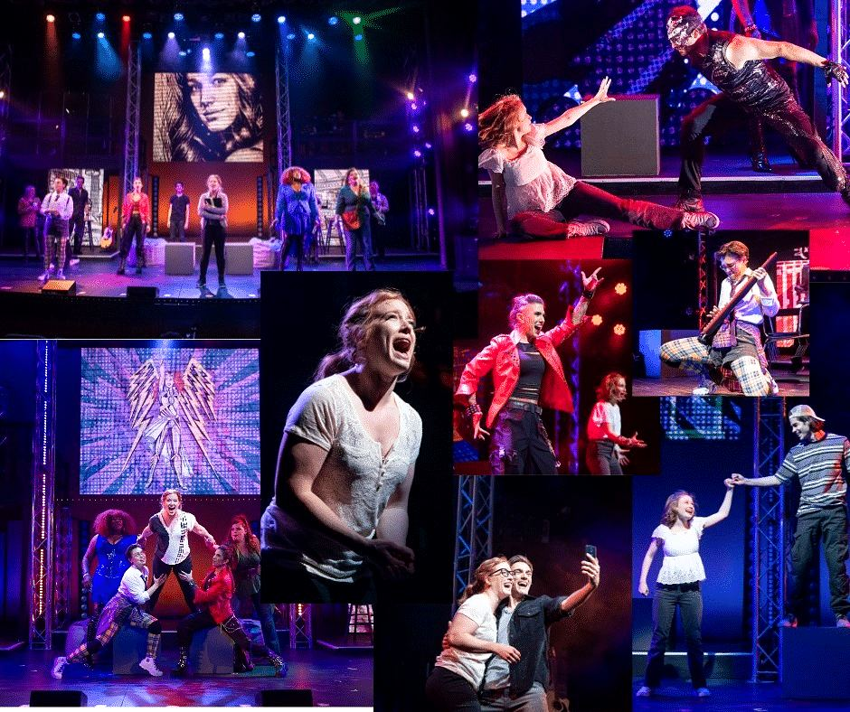
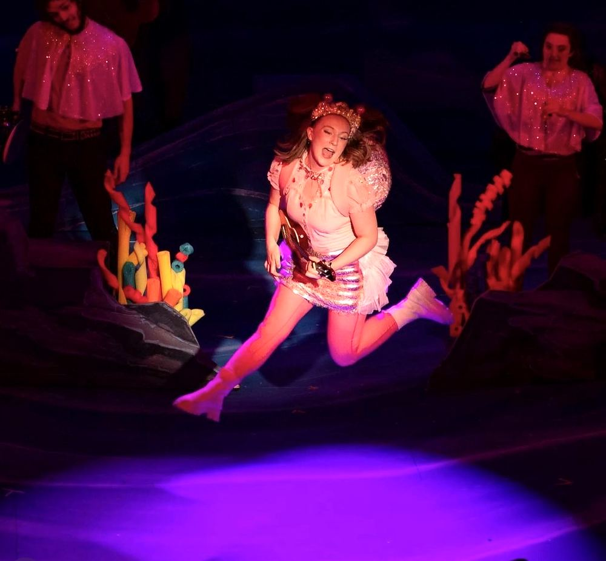
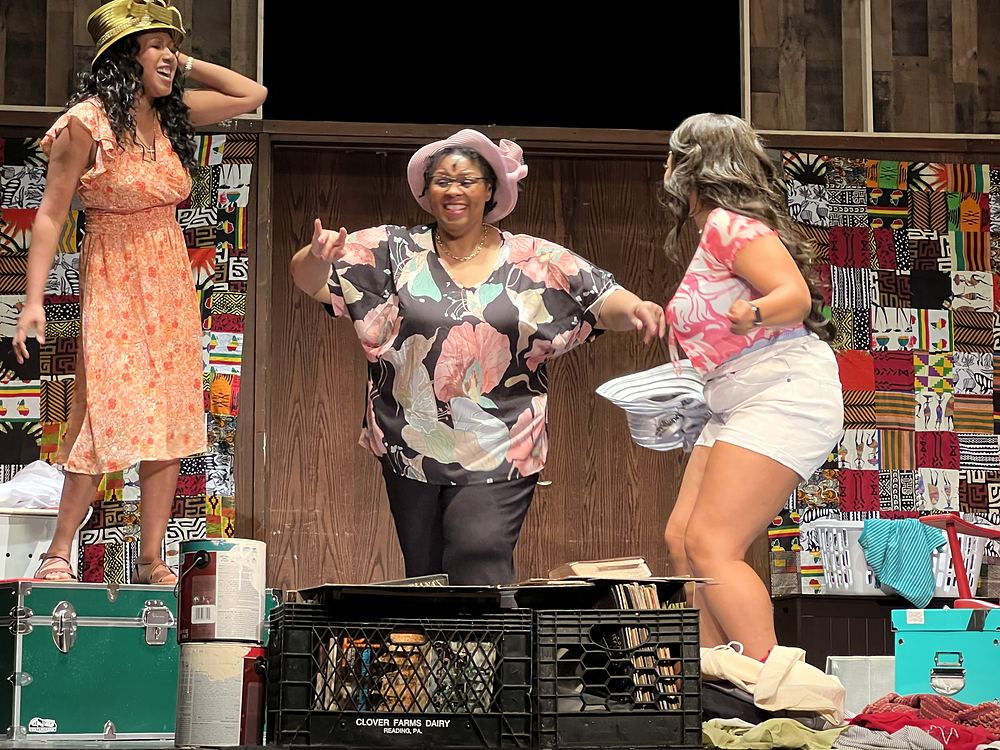
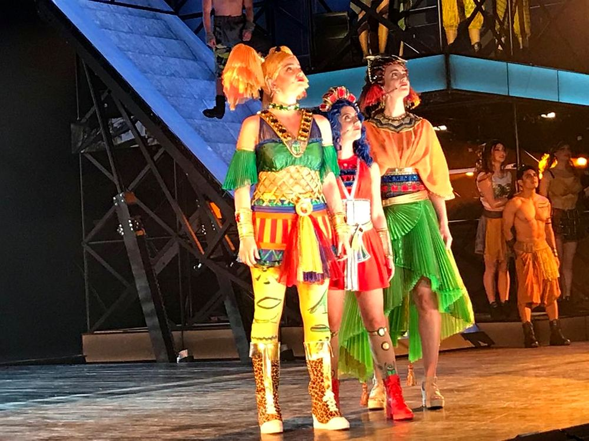
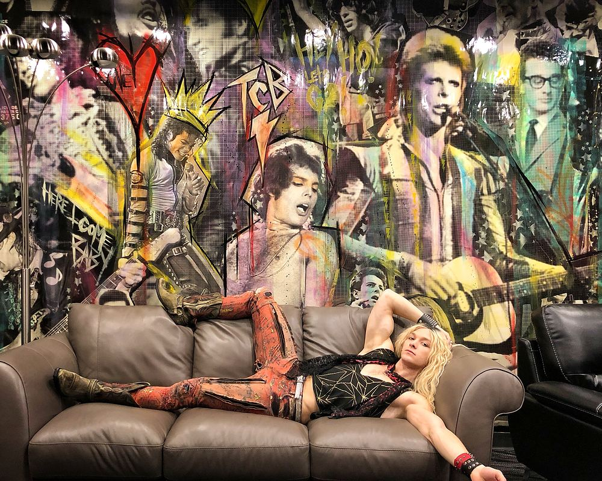
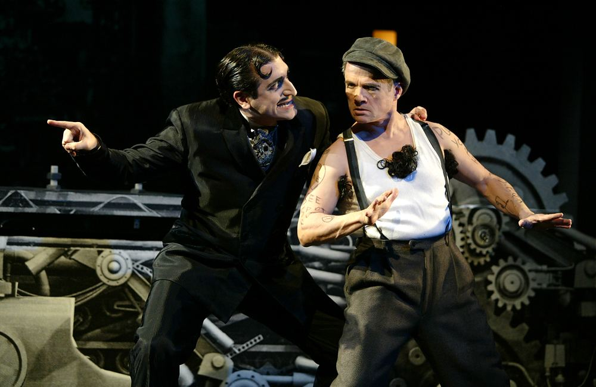
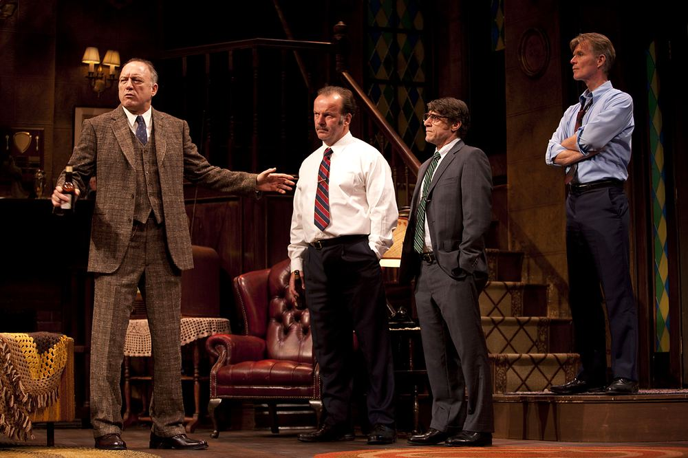
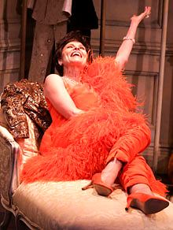
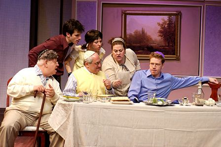

Plays & Musicals

Super You (In Development)

Spells of the Sea (In Development)

Sistas (Off Broadway)

ONE de Musical
Rocktopia (Broadway)

Rock Of Ages 10th Anniversary Tour

Evil Dead – The Musical (Off Broadway)

Silent Laughter (Off Broadway)

That Championship Season (Westport Country Playhouse)

This Property Known As Garland (Off Broadway)

Jewtopia (Off Broadway)